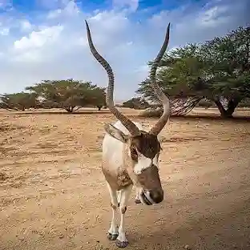

Addax
Critically Endangered
Estimated remaining: Fewer than 100 in the wild
Habitat
Desert and semi-desert regions of the Sahara, including Niger, Chad, and Morocco. Adapted to survive in arid dunes, gravel plains, and rocky hillsides.
Threats
- Poaching and illegal hunting
- Habitat loss from oil exploration and agriculture
- Armed conflict in native regions
- Climate change and desertification
Conservation efforts
Reintroduction programs in Chad, Niger, and Morocco have released over 150 captive-bred Addax into protected reserves like Ouadi Rimé–Ouadi Achim. GPS tracking, genetic monitoring, and international breeding programs are helping restore wild populations.